브라우저가 알려주지 않는 67가지 이상한 디버깅 트릭
원본: https://alan.norbauer.com/articles/browser-debugging-tricks
브라우저의 디버거1를 최대한 활용하기 위한 유용하지만 뻔하지 않은 방법들입니다. 개발자 도구에 대한 중급 이상의 이해를 가지고 있다고 가정합니다.
조건부 중단점 고급 활용법
예상치 못한 위치에서 사이드 이펙트가 있는 표현식을 사용할 때, 조건부 중단점과 같은 기본 기능을 활용하여 더 많은 기능을 끌어낼 수 있습니다.
로그 지점 / 추적 지점예를 들어, 중단점에서 console.log를 사용할 수 있습니다.
로그 지점은 실행을 일시 중지하지 않고 콘솔에 기록하는 중단점입니다.
마이크로소프트 엣지에는 오래전부터 로그 지점이 내장되어 있었고 크롬은 v73에서 로그 지점을 추가했지만 파이어 폭스에서는 그렇지 않습니다.
하지만 조건부 중단점을 사용하여 모든 브라우저에서 중단점을 시뮬레이션할 수 있습니다.
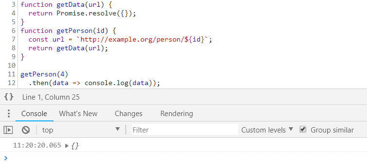
해당 줄이 얼마나 많이 실행되었는지 카운트하고 싶다면 console.log 대신 console.count를 사용하세요.
변경 (2020년 5월): 이제 모든 주요 브라우저에서 로그 지점/추적 지점을 지원합니다. (Chrome 로그 지점, Edge 추적 지점, Firefox 로그 지점)
감시 창 (Watch pane)감시 창에서 console.log를 사용할 수도 있습니다.
예를 들어 디버거에서 앱이 중단될 때마다 localStorage의 스냅샷을 덤프하고 싶다면 console.table(localStorage) 감지를 생성할 수 있습니다.
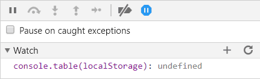
또는 DOM이 변경된 후 표현식을 실행하려면 요소 검사기에서 DOM 변경 중단점을 설정합니다.
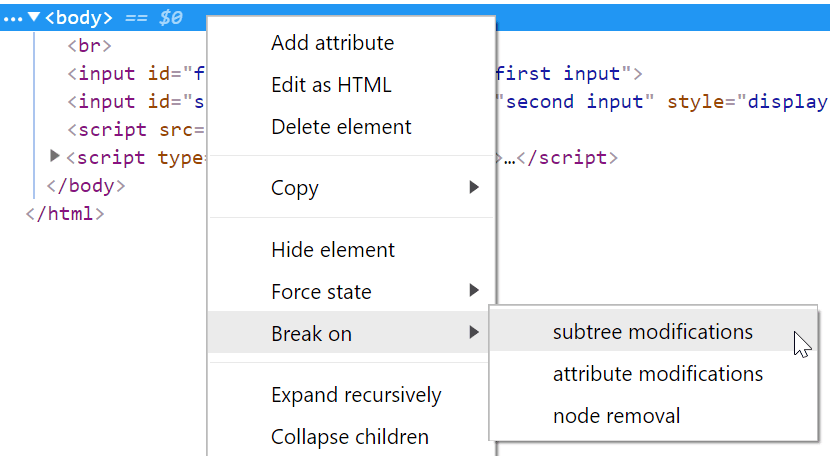
그런 다음 감시 표현식을 추가합니다. 예를 들어 DOM 스냅샷 기록을 하려면 다음과 같이 합니다:
(window.doms = window.doms || []).push(document.documentElement.outerHTML);이제 DOM 하위 트리를 수정한 후 디버거가 실행을 일시 중지하고 새 DOM 스냅샷이 window.doms 배열의 끝에 오게 됩니다.(실행을 일시 중지하지 않는 DOM 변경 중단점을 생성하는 방법은 없습니다.)
로딩 스피너를 표시하는 함수와 이를 감추는 함수가 있는데 코드 어딘가에서 숨기기를 호출하지 않고 표시 메서드만 호출하고 있다고 가정해 보겠습니다.
짝이 없는 표시 호출의 소스를 어떻게 찾을 수 있을까요?
show 메서드의 조건부 중단점에서 console.trace를 사용하여 코드를 실행하고, show 메서드의 마지막 스택 기록을 찾은 다음 호출자를 클릭하여 해당 코드로 이동합니다.
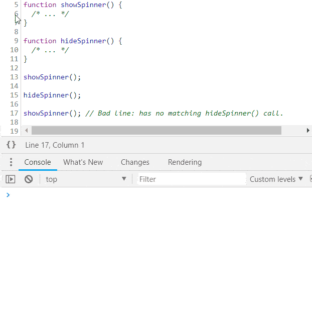
프로그램 동작 변경하기
프로그램 동작에 사이드 이펙트가 있는 표현식을 사용하면 브라우저에서 바로 프로그램 동작을 변경할 수 있습니다.
예를 들어 getPerson 함수의 매개변수인 id를 재정의할 수 있습니다.
id=1은 true로 평가되므로 이 조건부 중단점은 디버거를 일시 중지합니다.
이를 방지하려면 표현식에 false를 추가하세요.
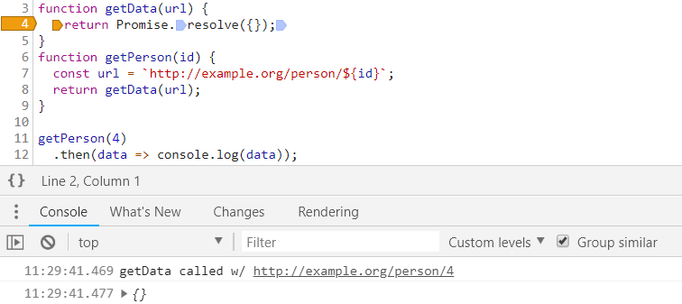
빠르고 간단한 성능 프로파일링
조건부 중단점 평가 시간 등으로 성능 프로파일링을 혼란스럽게 만들어서는 안 되지만, 무언가를 실행하는 데 걸리는 시간을 빠르고 간단하게 측정하고 싶다면 조건부 중단점에서 콘솔 타이밍 API를 사용할 수 있습니다.
시작 지점에 console.time('label') 조건으로 중단점을 설정하고 종료 지점에 console.timeEnd('label') 조건으로 중단점을 설정하면 됩니다.
측정 대상 항목이 실행될 때마다 브라우저는 소요 시간을 콘솔에 기록합니다.

함수의 항수(Arity) 활용
인자 갯수에 따른 중단현재 함수가 3개의 인수로 호출될 때만 일시 중지하기
arguments.callee.length === 3
옵셔널 매개변수가 있는 함수가 있을 때 유용합니다.
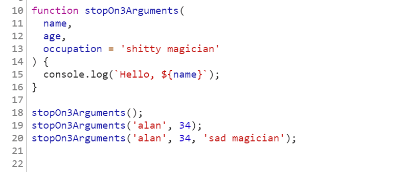
항수 불일치시 중단현재 함수가 잘못된 인수 개수로 호출될 때만 일시 중지합니다. (arguments.callee.length) != arguments.length
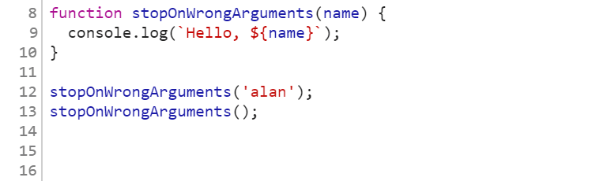
함수 호출부의 버그를 찾을 때 유용합니다.
시간 활용
페이지 로드 스킵페이지 로드 후 5초 동안 일시 중지하지 않기
performance.now() > 5000
중단점을 설정하고 싶지만 초기 페이지 로드 후 실행을 일시 중지하는 데만 관심이 있는 경우에 유용합니다.
N 초 스킵하기다음 5초 이내에 중단점에 도달하면 실행을 일시 중지하지 않고, 그 이후에는 언제든지 일시 중지합니다.
(window.baseline = window.baseline || Date.now()),
Date.now() - window.baseline > 5000;원하는 경우 언제든지 콘솔에서 카운터를 재설정 합니다. window.baseline = Date.now()
CSS 사용
계산된 CSS 값에 따라 일시 중지하기(예: document body의 배경색이 빨간색일 때만 실행 일시 중지):
window.getComputedStyle(document.body).backgroundColor === "rgb(255,0,0)";짝수 호출만
줄이 짝수 번 실행될 때마다 일시 중지:
(window.counter = window.counter || 0), window.counter % 2 === 0;무작위 중단
줄을 실행을 무작위로 중단합니다.(예: 줄이 실행되는 10번 중 1번만 중단) Math.random() < 0.1
절대 중단시키지 않기
공백을 우클릭하고 "Never Pause Here"을 선택하면 크롬은 false 인 절대 통과하지 않는 조건부 중단점을 생성합니다.
이를 통해 디버거는 이 라인에서 일시 중지되지 않습니다.
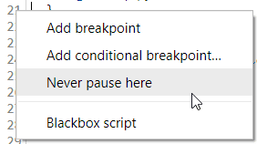
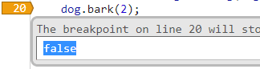
XHR 중단점에서 한 줄을 제외하거나, 예외가 발생했을 때 이를 무시하고 싶을 때 유용합니다.
자동 인스턴스 ID
생성자에서 아래과 같은 조건부 중단점을 설정하여 클래스의 모든 인스턴스에 고유 ID를 자동으로 할당하세요.
(window.instances = window.instances || []).push(this).
그런 다음 고유 ID를 검색하려면 window.instances.indexOf(instance)를 사용하세요. (예: 클래스 메서드에 있는 경우 window.instances.indexOf(this)).
전역 boolean을 사용하여 하나 이상의 조건부 중단점을 생성합니다.
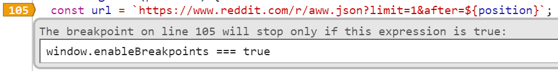
그런 다음 프로그래밍 방식으로 다음과 같이 boolean을 토글 합니다.
콘솔에서 수동으로 하는 방법은 다음과 같습니다.
window.enableBreakpoints = true;다른 중단점에서 하는 방법은 다음과 같습니다.

콘솔의 타이머에서 하는 방법은 다음과 같습니다.
setTimeout(() => (window.enableBreakpoints = true), 5000);기타
monitor() class 호출
크롬의 monitor 커맨드 라인 메서드를 사용해서 모든 클래스 메서드 호출을 쉽게 추적할 수 있습니다.
예를 들어 아래와 같은 Dog 클래스가 있다고 가정해봅시다.
class Dog {
bark(count) {
/* ... */
}
}Dog의 모든 인스턴스에 대한 모든 호출을 알고 싶으면 명령줄에 아래 내용을 붙여 넣습니다.
var p = Dog.prototype;
Object.getOwnPropertyNames(p).forEach((k) => monitor(p[k]));그러면 콘솔에 출력됩니다.
> function bark called with arguments: 2메서드 호출에 대해 실행을 일시 중지하려면(콘솔에 기록하는 대신) monitor 대신 debug를 사용할 수 있습니다.
클래스는 모르지만 인스턴스를 아는 경우에는 아래와 같이 할 수 있습니다.
var p = instance.constructor.prototype;
Object.getOwnPropertyNames(p).forEach((k) => monitor(p[k]));모든 클래스의 인스턴스에 대해 이 작업을 수행하는 함수를 작성할 때 유용합니다. (Dog 대신)
함수 호출 및 디버그
콘솔에서 디버그할 함수를 호출하기 전에 debugger를 호출합니다. 예시를 살펴보겠습니다.
function fn() {
/* ... */
}콘솔에 아래와 같이 입력합니다.
> debugger; fn(1);그런 다음 "Step into next function call"을 사용하여 fn의 구현을 디버깅합니다.
fn의 정의를 찾아 중단점을 수동으로 추가하고 싶지 않거나, fn이 함수에 동적으로 바인딩되어 있는데 소스가 어디에 있는지 모를 때 유용합니다.
크롬에서는 명령줄에서 선택적으로 debug(fn)을 호출할 수도 있으며, 이 경우 fn이 호출될 때마다 디버거가 내부의 실행을 일시 중지합니다.
URL 변경시 실행 중지
단일 페이지 애플리케이션이 URL을 수정하기 전에(즉, 일부 라우팅 이벤트가 발생하기 전에) 실행을 일시 중지합니다.
const dbg = () => {
debugger;
};
history.pushState = dbg;
history.replaceState = dbg;
window.onhashchange = dbg;
window.onpopstate = dbg;탐색을 중단하지 않고 실행을 일시 중지하는 dbg 버전을 만드는 방법은 독자들께 연습용으로 남겨두겠습니다.
또한 코드에서 window.location.replace/assign을 직접 호출하는 경우에는 할당 후 페이지가 즉시 언로드되므로 디버깅할 것이 없어 처리되지 않습니다.
그럼에도 이런 리디렉션의 소스를 확인하고 리다이렉션 당시의 상태를 디버깅하려면 크롬에서 관련 메서드를 디버그하면 됩니다.
debug(window.location.replace);
debug(window.location.assign);프로퍼티 읽기 디버깅
객체가 있고 그 객체에서 프로퍼티를 읽을 때마다 알고 싶다면 debugger 호출과 함께 객체 getter를 사용하세요.
예를 들어 {configOption: true}를 {get configOption() { debugger; return true; }}로 변환합니다. (원본 소스 코드에서 또는 조건부 중단점을 사용합니다).
어떤 설정 옵션을 전달할 때 그 옵션이 어떻게 사용되는지 보고 싶을 때 유용합니다.
copy() 활용

copy() 콘솔 API를 사용하면 문자열을 잘라내지 않고도 브라우저에서 관심 있는 정보를 클립보드로 바로 복사할 수 있습니다.
복사하고 싶을 만한 정보 몇 가지를 소개합니다.
현재 DOM 스냅샷:
copy(document.documentElement.outerHTML);리소스 메타데이터 (예. images):
copy(performance.getEntriesByType("resource"));큰 JSON blob, 포맷팅된:
copy(JSON.parse(blob));localStorage 덤프:
copy(localStorage);기타.
HTML/CSS 디버깅
JS 콘솔은 HTML/CSS의 문제를 진단할 때 도움이 될 수 있습니다.
JS 비활성화상태에서 DOM 검사하기DOM 인스펙터에서 ctrl+\ (크롬/윈도우)를 누르면 JS 실행을 언제든 멈춥니다.
이를 통해 JS가 DOM을 변형하거나 이벤트(예: 마우스 오버)로 인해 DOM이 변경될 염려 없이 DOM의 스냅샷을 검사할 수 있습니다.
조건부로만 표시되는 DOM 요소를 검사하고 싶다고 가정해 보겠습니다. 해당 요소를 검사하려면 마우스를 해당 요소로 이동해야 하는데, 마우스를 이동하려고 하면 해당 요소가 사라집니다:
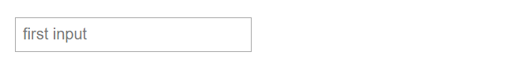
요소를 검사하려면 다음 코드를 콘솔에 붙여 넣으면 됩니다: setTimeout(function() { debugger; }, 5000);
이렇게 하면 5초 동안 UI를 트리거할 수 있으며, 5초 타이머가 끝나면 JS 실행이 일시 중지되고 요소가 사라지지 않습니다.
요소를 잃지 않고 개발 도구로 마우스를 자유롭게 이동할 수 있습니다.

JS 실행이 일시 중지된 상태에서 요소를 검사하고, CSS를 편집하고, JS 콘솔에서 명령을 실행하는 등의 작업을 수행할 수 있습니다.
특정 커서 위치, 포커스 등에 따라 달라지는 DOM을 검사할 때 유용합니다.
DOM 스냅샷 기록
현재 상태의 DOM 사본을 가져옵니다.
copy(document.documentElement.outerHTML);매 초마다 DOM 스냅샷을 기록하기
doms = [];
setInterval(() => {
const domStr = document.documentElement.outerHTML;
doms.push(domStr);
}, 1000);혹은 콘솔에 이를 덤프합니다.
setInterval(() => {
const domStr = document.documentElement.outerHTML;
console.log("snapshotting DOM: ", domStr);
}, 1000);포커싱된 요소 모니터링
(function () {
let last = document.activeElement;
setInterval(() => {
if (document.activeElement !== last) {
last = document.activeElement;
console.log("Focus changed to: ", last);
}
}, 100);
})();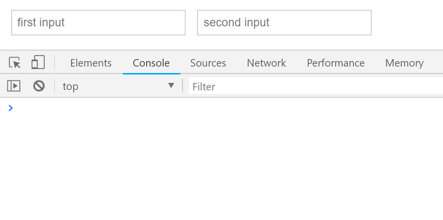
볼드 요소 찾기
const isBold = (e) => {
let w = window.getComputedStyle(e).fontWeight;
return w === "bold" || w === "700";
};
Array.from(document.querySelectorAll("*")).filter(isBold);하위 요소만
또는 인스펙터에서 현재 선택된 요소의 하위 요소에 대해서만 사용할 수 있습니다.
Array.from($0.querySelectorAll("*")).filter(isBold);현재 선택된 요소 참조
콘솔에서 $0은 요소 인스펙터에서 현재 선택된 요소를 자동으로 참조합니다.


크롬과 엣지에서는 $1로 마지막으로 검사한 요소, $2로 그 이전 요소 등에 접근할 수 있습니다.
크롬에서는 현재 선택된 요소의 모든 이벤트 리스너를 조사할 수 있습니다: getEventListener($0)
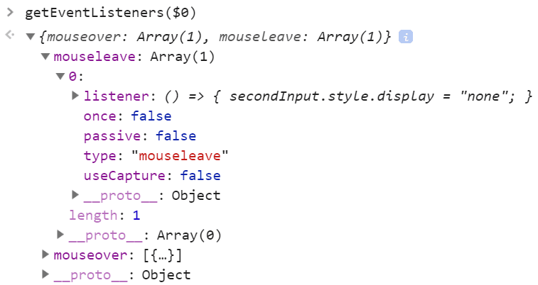
요소에 대한 이벤트 모니터링선택된 요소의 모든 이벤트 디버깅하기: monitorEvents($0)
선택된 요소의 특정 이벤트 디버깅하기: monitorEvents($0, ["control", "key"])

각주
브라우저 로고가 따로 표시되어 있지 않으면 크롬, 파이어폭스 및 엣지에서 지원되는 팁입니다.